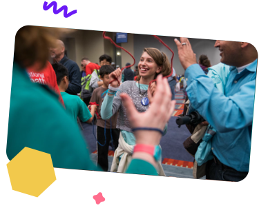

VOLUNTEERS
Make magical math moments in your community.
Mathopolis relies on volunteers to help create magical math moments for kids. We have a number of ways to get involved, from playing math puzzles in a virtual classroom to hosting your own festival.

Testimonials
I am a biochemist, but I loved helping students explore a logic puzzle about a pirate captain and crew (complete with pirate hats).
David H.
Festival Volunteer

Lead an Activity
Play a puzzle with kids at a virtual math circle or in-person festival. Volunteers lead our puzzles by encouraging independent exploration and asking strategic questions to help with deeper thinking.
ATTEND A WORKSHOP
Run a Classroom Visit
Lead virtual classroom visits in your neighborhood elementary or middle school. We train volunteers (including high school and college students) on how to manage this virtual outreach activity. The only thing you need to bring is an open mind and the desire to bring fun math into a kid’s life.

Host a Festival
A math festival is a one-time event where children gather and explore math through puzzles. Our festivals are hosted by volunteers who want to connect the children in their community with a joyful math experience. We have all the resources you need to host a festival.
learn more